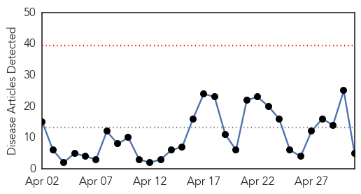
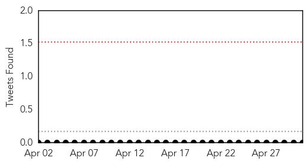
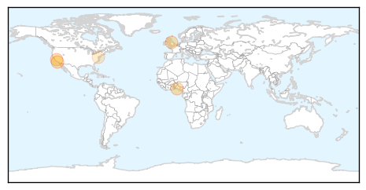
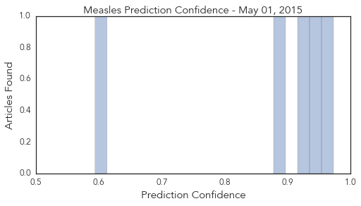

Toggle navigation
Early Warning
Daily Alerts
Measles
May 01, 2015
Compare to:
-
Dengue Fever
Hemmorhagic Fever
Mold/Fungal Infection
Influenza
Meningitis
Pertussis / Whooping Cough
Middle East Respiratory Syndrome
Cholera
Hepatitis
Chikungunya
Yellow Fever
Bubonic Plague
West Nile Virus
Swine Flu
Ebola
Unknown
Mumps
30 Day Trends
Web: 0
alerts
, 0
warnings
Twitter: 0
alerts
, 0
warnings
Top Articles:
0.973
Outbreaks Stir Pointed Vaccination Debate
0.936
Is The Measles Virus Back For Good?
0.929
Ensuring every Nigerian child receives life-saving vaccination
0.889
9 Year Old Girls Should Get HPV Vaccines and Other Vaccination and Immunization Myths and Misconceptions
0.594
Americas become world's 1st rubella-free region :: La Prensa :: America in English
Top Tweets:
No tweets found for May 01, 2015
Web/News Articles

Tweets

Article Locations

Article Confidences
